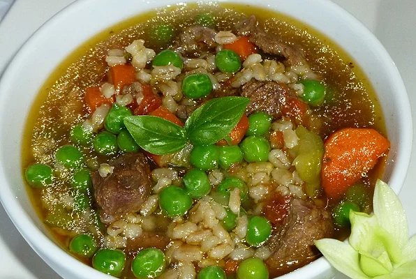

Beef Barley Vegetable Soup

Slow cooker, hearty, easy. Serve with a hearty bread, and enjoy.
Barley contains many important vitamins, minerals and antioxidants. What's more, it's a
good source of beta-glucan, a fiber which may help lower cholesterol and blood sugar.
Ingredients
- 1 (3 pound) beef chuck roast
- ½ cup barley
- 1 bay leaf
- 2 tablespoons oil
- 3 carrots, chopped
- 3 stalks celery, chopped
- 1 onion, chopped
- 1 (16 ounce) package frozen mixed vegetables
- 4 cups water
- 4 cubes beef bouillon cube
- 1 tablespoon white sugar
- ¼ teaspoon ground black pepper
- 1 (28 ounce) can chopped stewed tomatoes
- salt to taste
- ground black pepper to taste
Steps
- In a slow cooker, cook chuck roast until very tender
(usually 4 to 5 hours on High, but can vary with different slow cookers).
Add barley and bay leaf during the last hour of cooking. Remove meat, and
chop into bite-size pieces. Discard bay leaf. Set beef, broth, and barley
aside.
- Heat oil in a large stock pot over medium-high heat. Saute carrots, celery,
onion, and frozen mixed vegetables until tender. Add water, beef bouillon
cubes, sugar, 1/4 teaspoon pepper, chopped stewed tomatoes, and beef/barley
mixture. Bring to boil, reduce heat, and simmer 10 to 20 minutes. Season with
additional salt and pepper to taste.